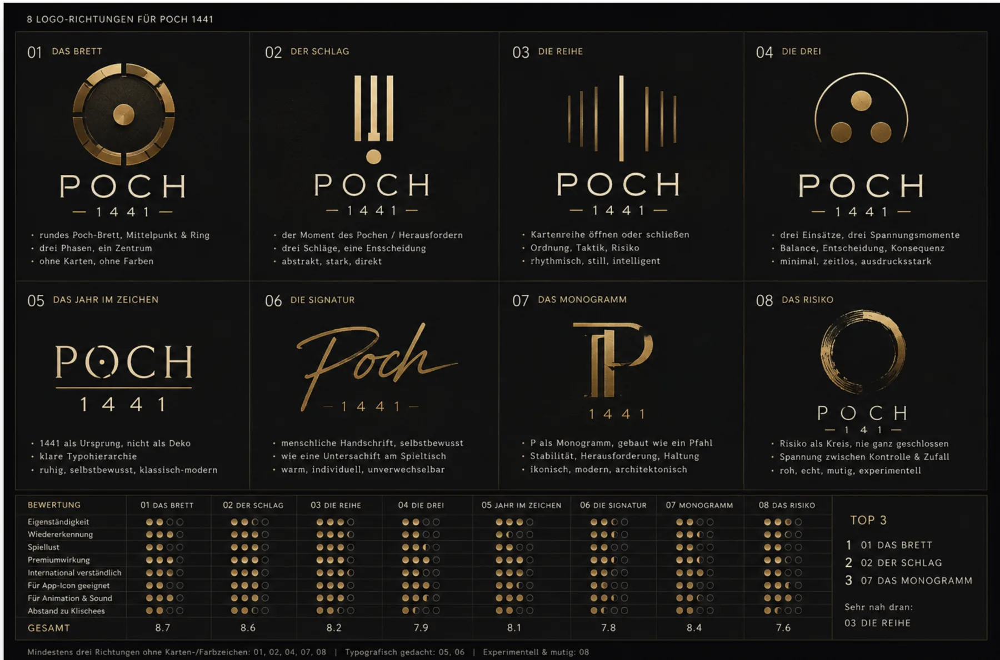
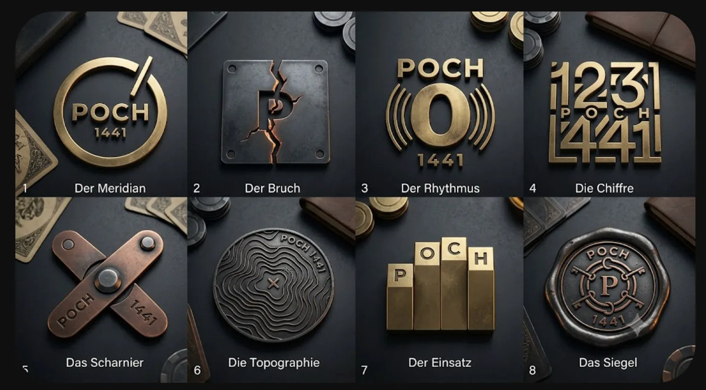

Logo Studio
Ein Zeichen, das am Tisch beginnt.
Zwölf Richtungen. Vier Familien vertieft. Form entscheidet, nicht Material.
Das Logo soll Spiellust und Haltung vermitteln. Nicht Reichtum oder Exklusivität.
24 px lesbar
in 5 Sekunden zeichnbar
ohne Material eigenständig
Die stärkste Markenarchitektur
Drei Ideen übernehmen verschiedene Rollen. Zusammen erzählen sie nur POCH.
Vier Familien. Fünf Zustände.
Die Baseline bleibt sichtbar. Daneben zeigen vier kontrollierte Iterationen, wie weit die Idee wirklich trägt.
Zwölf Richtungen, gleiche Prüfung
Jedes Zeichen steht auf demselben Grund. Anklicken öffnet die Juryansicht.
Besteht die Idee ohne Inszenierung?
60, 40 und 24 Pixel zeigen gnadenlos, welche Silhouette wirklich trägt.
Form zuerst. Bewegung als Bedeutung.
Das Brett bleibt ruhig. Ein Klopfen verschiebt die Mitte. Das offene C entsteht aus echter Reaktion, nicht aus einem Glanzeffekt.
Was wir aus den Referenzen übernehmen
Die Struktur bleibt. Die schwarze Gold-Luxusästhetik bleibt ausdrücklich draußen.

